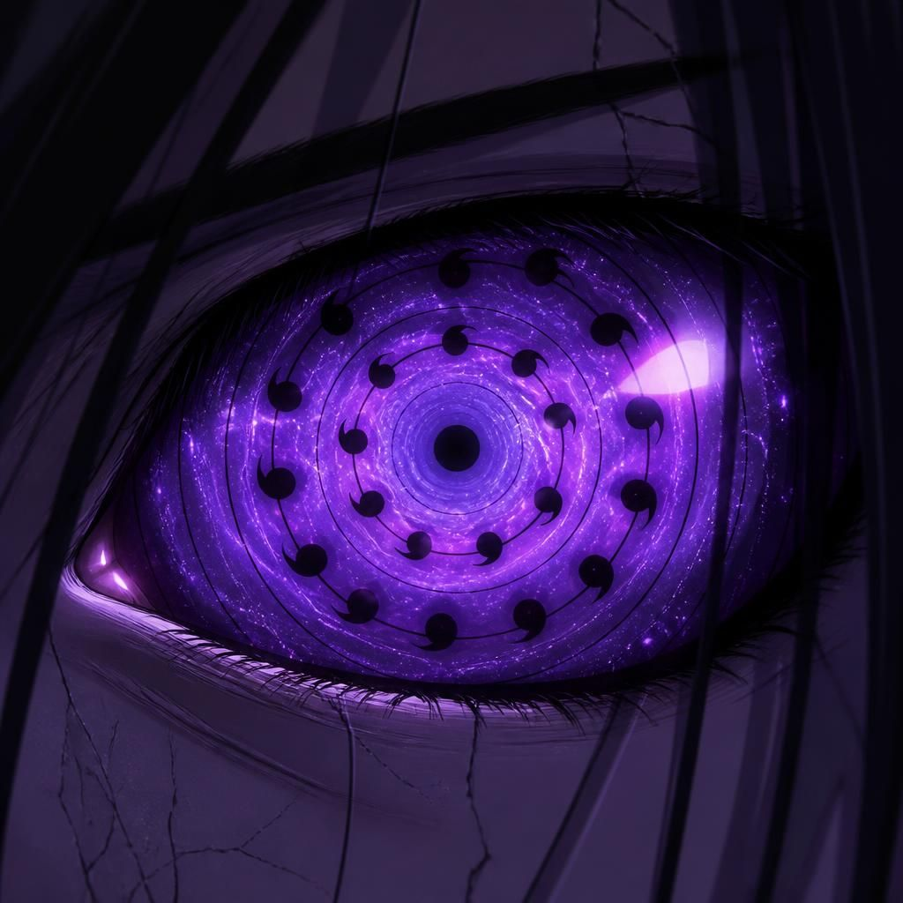

👁️
Rinnegan Primordial — Padrão dos Vinte Anéis
輪廻眼 · Forma Suprema dos Quatro Irmãos · Anterior a Kaguya
20 Anéis4 Portadores SupremosSincronia dos IrmãosOrigem de Todos os Dōjutsus
"Quando os quatro Rinnegan de vinte anéis abrem juntos, o campo deixa de ser batalha — vira sentença."
👁️ Galeria do Rinnegan Primordial
O Rinnegan de vinte anéis agora também tem apoio visual. Os quatro portadores têm o mesmo núcleo primordial, mas cada manifestação carrega a assinatura do usuário e da sua forma suprema.




👁️ Rinnegan dos Herdeiros — regra para não confundir
Quem tem a forma suprema e quem tem a forma herdeira
A forma de vinte anéis — o Rinnegan Primordial completo e ativo em seu ápice — continua exclusiva de Eduardo, Guilherme, Leonardo e Sasuke. Já Kuroshin, Aiko, Kael, Mizuki e Akari carregam a versão herdeira: Rinnegan de 5 Anéis, o mesmo dōjutsu, só que num patamar menor — próximo do olho que Indra teria alcançado, não a versão derivada de Kaguya. Isso não quebra a hierarquia: só mostra que eles herdaram um caminho ocular avançado, mas ainda não ocupam o topo absoluto.
Kuroshin
Rinnegan de 5 Anéis (Ômega). É a forma de campo e pressão do personagem, acima do patamar comum, mas fora da categoria de vinte anéis dos portadores supremos.
Aiko
Rinnegan de 5 Anéis (herdeiro). Amplia o domínio temporal e a leitura de fluxo do campo.
Kael
Rinnegan de 5 Anéis (herdeiro). Funciona junto da especialidade pessoal dele para contaminar chakra, técnicas e estabilidade do oponente.
Mizuki
Rinnegan de 5 Anéis (herdeira). Reforça o eixo Shinsei + Senka. É poder herdado, não a forma suprema central.
Akari
Tenseigan + Rinnegan de 5 Anéis (herdeira). Dōjutsu duplo: a base Hyūga soma-se à mesma camada herdeira dos outros quatro.
Portadores Supremos — 20 Anéis
EduardoKaienten · Ruptura
GuilhermeHyōkoku · Campo
LeonardoShinsei · Resultado
SasukeKyōkan · Reflexo
Regra da Forma de Vinte Anéis
A forma de vinte anéis fica reservada aos quatro irmãos centrais: Sasuke, Eduardo, Guilherme e Leonardo. Os anéis internos leem chakra, intenção e memória de técnica; os anéis externos controlam espaço, pressão, selamento e domínio do campo.
Naruto como Eixo dos Seis Caminhos
Naruto não recebe o Rinnegan de vinte anéis. No lugar disso, desperta a forma de apoio suprema: 10 Gudōdama Primordiais e 2 Bastões Divinos, sustentando a sincronia dos irmãos com Yang, energia natural e chakra de Kurama.
👁️ Habilidades Universais — Ativas para Todos os Portadores
01
Genshi Shikai · 原始視界
Visão Primordial
O portador enxerga chakra como matéria física visível — cor, textura, densidade, direção. Não é o Byakugan que vê canais. O Genshi Shikai vê o chakra em si, no ar, no solo, nos seres, nas técnicas, nas dimensões.
Nenhuma técnica de ocultamento de chakra funciona. Chakra não pode se esconder de olhos feitos do mesmo material.
02
Rinne Kiroku · 輪廻記録
Registro do Samsara
O olho grava tudo que passou pelo campo de visão desde o primeiro despertar — não como memória humana que falha. Como registro absoluto em resolução perfeita. Qualquer técnica vista uma vez está catalogada para sempre: sequência de mãos, fluxo de chakra, estrutura interna, ponto de fraqueza.
Nenhuma técnica funciona duas vezes contra o mesmo portador.
03
Jikū Ranse · 時空乱世
Perturbação de Espaço-Tempo
O portador percebe distorções dimensionais antes de ocorrerem — Kamui, Hiraishin, portais do Rinnegan, trocas de Kaguya. O olho detecta a assinatura de espaço-tempo 0,8 segundos antes da ativação — tempo suficiente para sair, bloquear ou inserir algo no portal antes de fechar.
Adicionalmente, podem entrar em qualquer dimensão aberta por técnica alheia ao perceber a assinatura — sem precisar da técnica original.
04
Tamashii Dōka · 魂同化
Assimilação de Alma
O portador sente a força vital de qualquer ser no campo — não o chakra, mas a vida em si. Ofensiva: sabe exatamente quanto resta ao adversário, se está fingindo força, se está próximo do limite. Protetora: pode transferir força vital própria para um aliado próximo da morte via olhar direto.
Não é cura de chakra — é transfusão de vida. Custa proporcionalmente ao que transfere.
05
Mugen Dōjutsu · 無限瞳術
Dōjutsu Infinito
O Rinnegan Primordial é a origem de todos os dōjutsus. Os portadores podem replicar visualmente qualquer dōjutsu que enxergarem sendo usado — não copiar a técnica, mas replicar o mecanismo do olho por tempo limitado. Viram o Byakugan? Três minutos com visão 360° e percepção de tenketsu. Viram o Tenseigan? Dois minutos de gravitação disponível. Custo proporcional à raridade.
O Rinnegan de Kaguya não é replicável — os portadores são a versão primordial, ela é a derivada.
06
Genten Shigan · 原点視眼
Visão da Origem Absoluta
O portador olha para qualquer coisa — ser, técnica, bijū, estrutura dimensional — e vê sua origem absoluta de chakra. Para técnicas: revela a fraqueza fundamental que existia desde que foi criada, o erro de design original nunca corrigido. Para bijūs: revela o aspecto do chakra de Kaguya do qual derivam e o ponto que interrompe a bijū por segundos. Para Kaguya: revelou a estrutura de selamento incompleto de Hagoromo.
Não há segredo de chakra que o Genten Shigan não leia.
07
Rinne Tsūshin · 輪廻通信
Comunicação do Samsara
Portadores do mesmo olho estabelecem canal de consciência direta entre si — sem palavras, sem sinais, sem delay. Em combate, o que um percebe todos recebem em tempo real. Eduardo compartilha o mapa do Kaienten. Leonardo distribui o mapa causal. Guilherme transmite o espectro de velocidade de chakra.
É a razão pela qual o Konton Rinne Baku pode ser executado em sincronia perfeita sem ensaio prévio.
08
Rikudō Kanshi · 六道監視
Vigilância dos Seis Caminhos
O portador percebe instantaneamente qualquer Técnica dos Seis Caminhos sendo canalizada nas redondezas — Shinra Tensei, Banshō Ten'in, Chibaku Tensei, invocação dos Caminhos — antes mesmo do efeito se manifestar, sentindo o vetor de força e o ponto de origem exato.
Mesmo sem o Rinnegan comum de quem usa a técnica, o portador primordial reconhece a assinatura dos Seis Caminhos onde quer que apareça.
09
Meikai Tsūro · 冥界通路
Passagem para o Além
O olho enxerga a fronteira entre vida e morte. Corpos reanimados, almas presas por Rinne Tensei ou qualquer construção que imite vida são identificados instantaneamente — o portador vê que não há alma verdadeira ali, apenas chakra moldado à forma de uma.
Não pode ser enganado por ilusões de ressurreição, disfarces post-mortem ou constructos vivos artificiais.
10
Konton Kyūin · 混沌吸引
Absorção do Caos
Dentro de um raio curto ao redor do portador, o olho absorve passivamente uma fração de qualquer ninjutsu de médio porte lançado contra ele — sem precisar invocar o Caminho Preta. Não anula o ataque sozinho, mas reduz sua potência antes do impacto.
Chakra puro em estado bruto ou golpes físicos não são afetados — só técnicas com moldagem de chakra elemental ou espiritual.
11
Ningen Rekishi · 人間歴史
Registro dos Caminhos Humanos
O portador identifica instantaneamente qual dos Seis Caminhos (Naraka, Preta, Gaki, Chikushōdō, Ningen, Tendō) melhor se encaixa em um corpo ou situação, mesmo sem despertar essas técnicas. É a leitura do "potencial de caminho" latente em qualquer ser vivo — útil para prever qual tipo de invocação, absorção ou controle um inimigo pode vir a usar.
Não concede o uso dos Seis Caminhos — apenas revela qual deles o alvo tende a manifestar.
12
Sōzō Hakai · 創造破壊
Criação e Destruição · A Mais Rara
Usada coletivamente, nunca individualmente. Quando três ou mais olhos ressoam simultaneamente no mesmo campo, o Rinnegan Primordial acessa o estado em que existia durante a criação do mundo. Por tempo limitado, os portadores podem alterar a natureza de chakra existente na área — não criar matéria do nada, mas reescrever o que o chakra é.
Chakra de fogo reescrito em chakra de terra. Chakra de genjutsu reescrito em neutro. Chakra negativo de Kaguya reescrito em chakra comum.
Chakra de fogo reescrito em chakra de terra. Chakra de genjutsu reescrito em neutro. Chakra negativo de Kaguya reescrito em chakra comum.
É o olho retornando à sua função original — os Dragões que moldaram o mundo, fazendo isso novamente por instantes.
🔀 Regra do Acesso Cruzado — Habilidades Nativas
Como funciona o Acesso Cruzado
Além das 12 habilidades universais acima, cada portador acessa as habilidades nativas dos outros portadores com custo dobrado. Isso significa que Eduardo pode usar o Shinsei de Leonardo, Guilherme pode usar o Dokugoku de Kael, e assim por diante — mas pagando o dobro do custo de chakra.
📋 Regras Gerais do Olho
Uso Ilimitado
O Rinnegan Primordial não tem desgaste por uso. Não causa cegueira. Não consome chakra passivamente. As habilidades universais são permanentes e sempre ativas. Custo de chakra só se aplica ao Acesso Cruzado (dobrado) e ao Sōzō Hakai (coletivo).
Superioridade sobre Derivados
O Rinnegan Primordial é a origem de todos os dōjutsus, incluindo o próprio Rinnegan comum. O Byakugan, o Sharingan, o Tenseigan e o Rinnegan de Kaguya são derivados — versões posteriores e incompletas do olho original. Nenhum derivado pode suprimir, copiar ou superar o primordial. Genjutsus de dōjutsus derivados não funcionam em portadores do primordial.
O Elo dos Cinco
Quando três ou mais portadores do Rinnegan Primordial operam no mesmo campo e ativam o Rinne Tsūshin, o poder coletivo supera a soma das partes. O Sōzō Hakai só pode ser ativado nesse estado. É a razão pela qual o Konton Rinne Baku — jutsu final dos cinco — selou Kaguya onde Hagoromo e Hamura levaram horas.